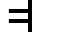
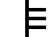
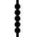
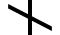
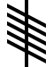

This inscription is translated as "Dovaido son of the Druid." It is located in Ballaqueeney, Port St Mary, Rushen, on the Isle of Man.





Sources:
Ogham inscription: From Wikipedia, the free encyclopedia ᚛ ᚁ ᚜
B
Beith
Beithe
Meaning: Birch

Word-Oghams (kennings):
From the Bríatharogam Morainn mac Moín:
From the Bríatharogam Maic ind Óc:
From the Bríatharogam Con Culainn:
Unicode: U+1681
Other notes and description:
So, to be honest, I don't have content that actually needs to be in this description element right now. I can, however, think of a few things that might be good to include if I had them:
- Some fun facts. But they'd have to be fun.
- Some other sort of notes or somesuch. Something that isn't included elsewhere.
- Other stuff I can't think of right now.
Let me say a little more--I hope that I'll be able to use this kind of rich description element along with it's child elements in the future.
Related ogham characters:


Sources:
Ogham: From Wikipedia, the free encyclopedia
A Wikipedia page on the Ogham characters
Bríatharogam: From Wikipedia, the free encyclopedia
A Wikipedia page on the Bríatharogam
Ogham alphabet: From Wikimedia Commons, the free media repository
A Wikimedia Commons gallery of Ogham characters
Ogham (Unicode block): From Wikipedia, the free encyclopedia
A Wikipedia page with details on the Unicode block for the Ogham
characters